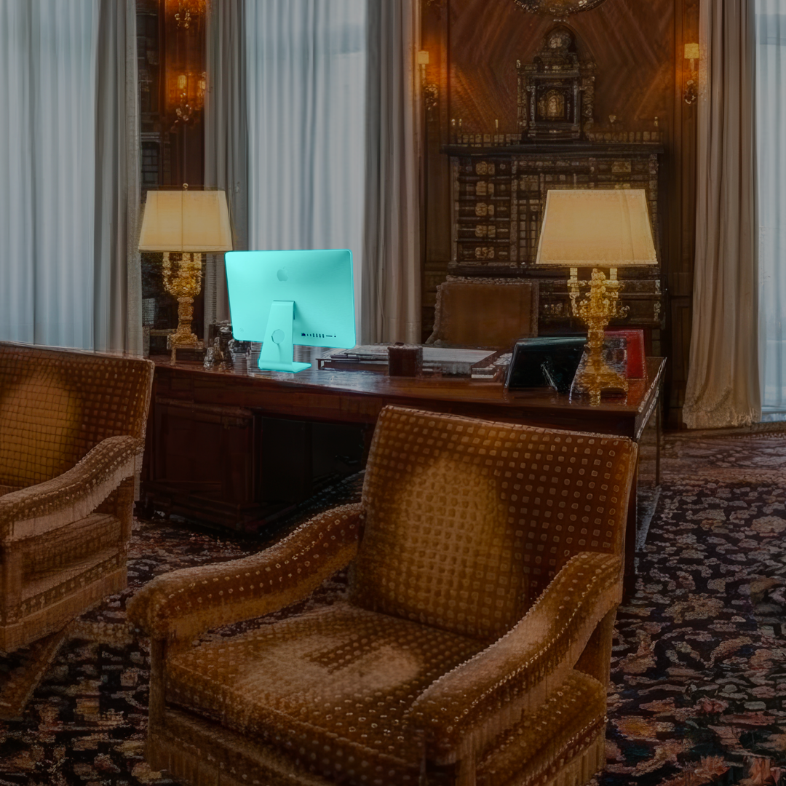

L'appartement Epstein :
l'enquête à 360°
Cette expérience immersive vous transporte dans une reconstitution fidèle de l'appartement new-yorkais de Jeffrey Epstein.
À travers 18 objets clés, découvrez les mécanismes d'un réseau d'influence planétaire.
Ce décor est une reconstitution, conçue à partir des photos et plan de l'appartement de Jeffrey Epstein, et assisté par IA.

Interagissez avec les objets mis en surbrillance, apprenez en plus avec les articles liés, et consultez votre avancée dans votre dossier de suivi.
Ce décor est une reconstitution, conçue à partir des photos et plan de l'appartement de Jeffrey Epstein, et assisté par IA.